17. Максимальный поток. Форд — Фалкерсон и Эдмондс — Карп
Остаточная сеть, Эдмондс — Карп и алгоритм Куна.
Материалы и примеры по пунктам
Алгоритм Форда-Фалкерсона и Эдмондса-Карпа для поиска макс потока
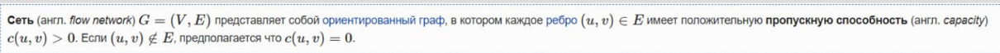
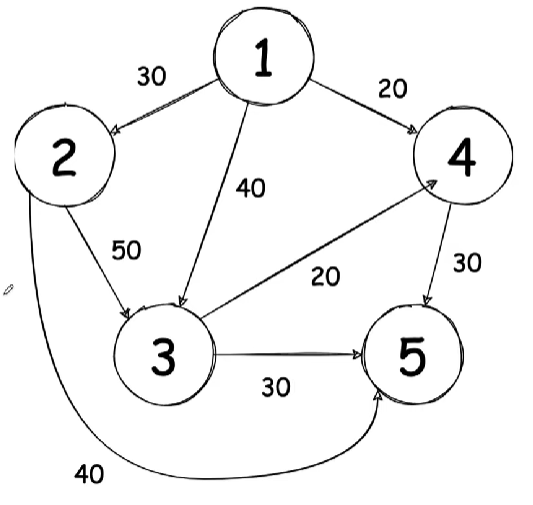
Пример потоковой сети
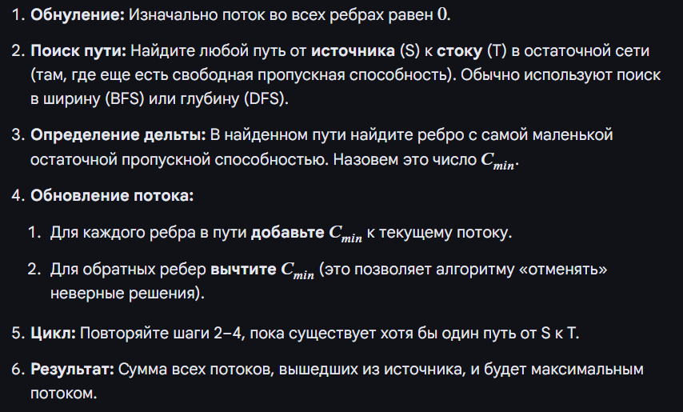
Обратное ребро остаточной сети позволяет отменить часть потока по прямому ребру.
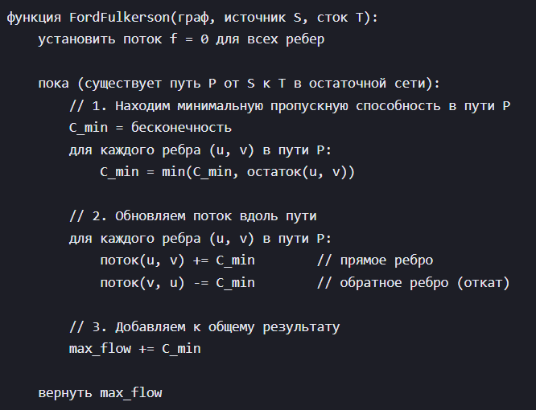
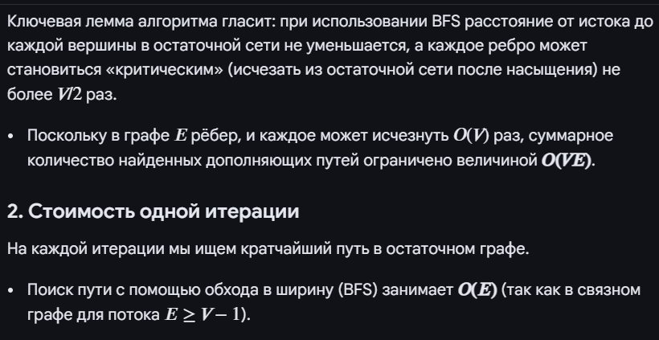
худший случай для Форда–Фалкерсона:

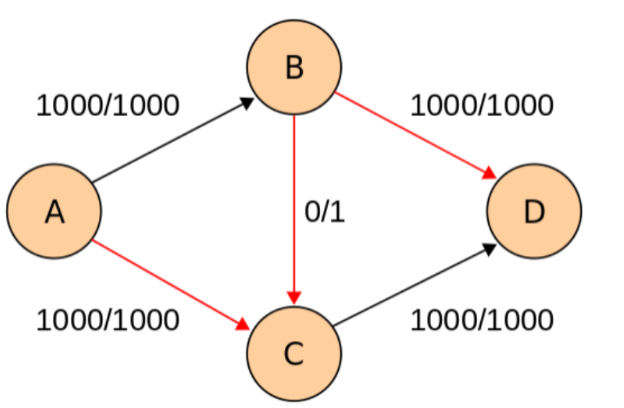
В этом примере выбор пути через ребро C–B может заставить алгоритм увеличивать поток только на единицу за шаг. Повторение такого выбора приводит к большому числу итераций.
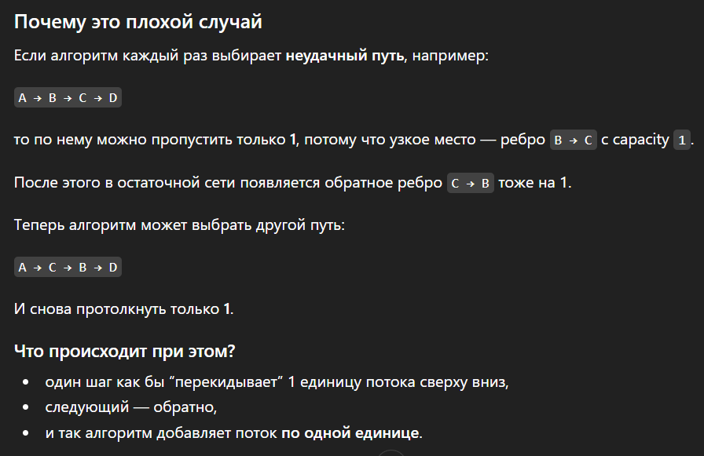
Для целых ёмкостей метод Форда — Фалкерсона завершится после конечного числа увеличений. Рациональные ёмкости можно масштабировать до целых. При иррациональных ёмкостях произвольный выбор путей может привести к незавершению.
Расчет максимальной объема передачи данных в сетях
Когда выбор увеличивающих путей приводит к худшему случаю?
При повторении неудачных путей поток может увеличиваться лишь на единицу за итерацию.
Алгоритм Эдмондса-Карпа
Выбирайте путь из истока в сток с наименьшим числом рёбер в остаточной сети.
Эдмондс — Карп задаёт правило выбора пути в методе Форда — Фалкерсона. Поиск в ширину гарантирует границу O(VE²).
Пропускные способности неотрицательны. Поиск увеличивающего пути рассматривает рёбра с положительной остаточной ёмкостью.
Метод Форда — Фалкерсона допускает любой увеличивающий путь.
Эдмондс — Карп выбирает путь с минимальным числом переходов.
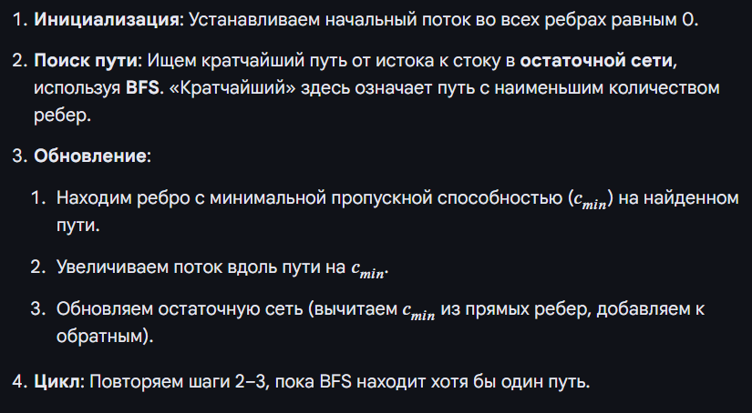
Решает проблему плохого случая в Форде-Фалкерсоне
Схемы и рукописные примеры
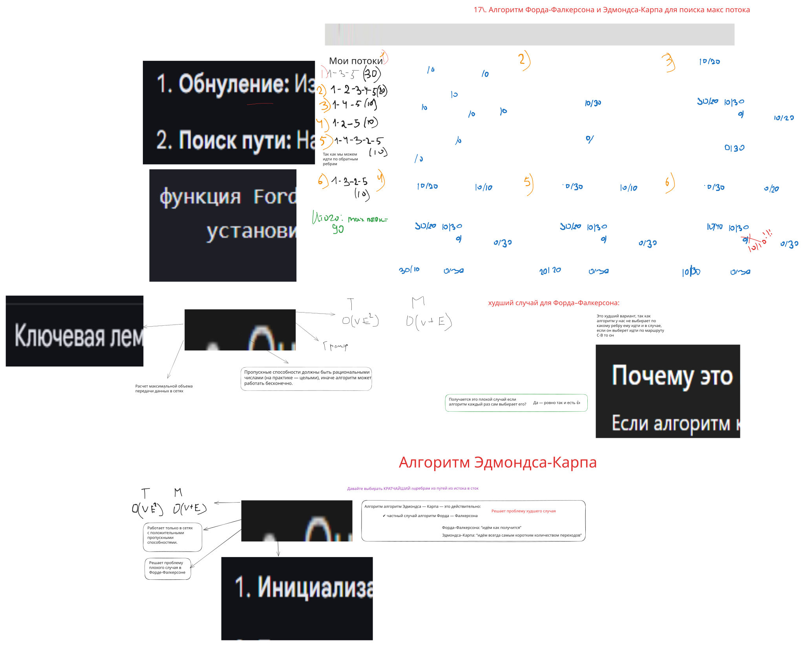
Страницы из PDF
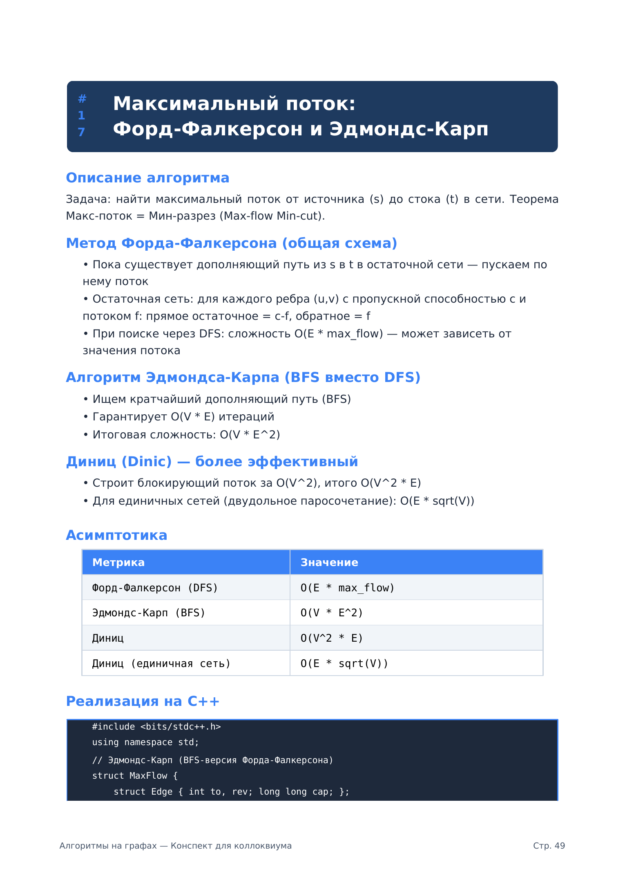
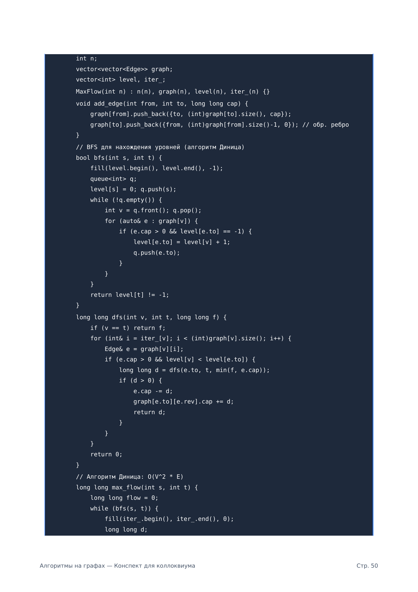
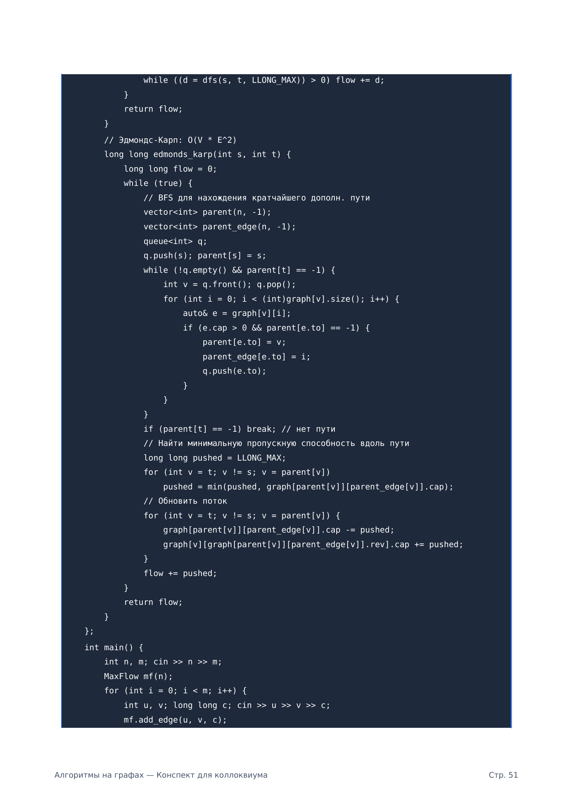